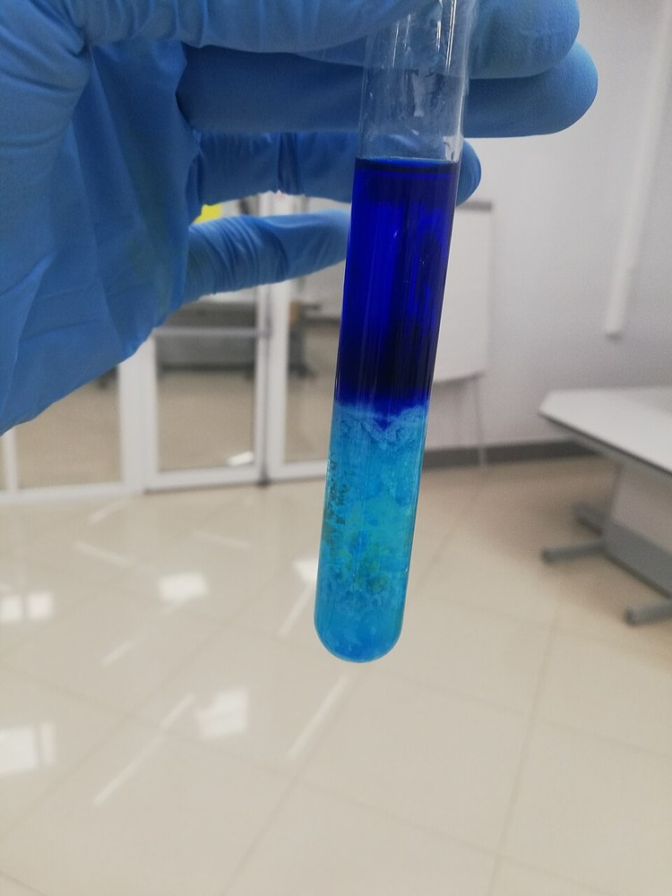

암모니아수 (Ammonium Hydroxide)

쉽게 풀면
암모니아수는 무색투명한 액체이지만 특유의 자극적인 냄새로 쉽게 알아챌 수 있는 물질이다. 암모니아 기체가 물에 녹으면 일부가 수산화이온을 내놓아 약한 염기성을 띠게 되며, 이 때문에 산성 물질을 중화하거나 세정하는 데 자주 쓰인다. 휘발성이 강해서 병뚜껑을 열면 자극적인 암모니아 냄새가 바로 퍼지므로 반드시 환기가 잘 되는 곳에서 다뤄야 한다. 온도가 올라가면 녹아 있던 암모니아 기체가 더 쉽게 빠져나가므로 서늘한 곳에 보관하는 것이 좋다.
왜 중요한가
암모니아수는 구리나 은 같은 금속 이온과 만나 특유의 색을 띠는 착이온을 형성하기 때문에 무기화학 실험에서 금속 이온 검출과 착화합물 합성에 널리 쓰인다. 또한 완충용액 제조나 침전 반응의 pH 조절제로도 자주 활용되며, 유리 기구 세정에도 쓰인다.
무엇이고 어디서 작용하나
- 암모니아수는 암모니아를 물에 녹인 용액이며 암모니아 워터, 수성 암모니아 등으로도 불린다. NH3(aq)로 쓰는 것이 더 정확하다.
- ‘수산화암모늄’이라는 이름은 [NH4+][OH−] 조성의 염을 떠올리게 하지만 NH4OH 시료를 분리하는 것은 불가능하다. NH4+와 OH− 이온은 아주 묽은 용액이 아니면 전체 암모니아의 큰 부분을 차지하지 못한다.
- 상업용 고농도 제품은 보메 26도(15.5 °C에서 암모니아 약 30 중량%)가 대표적이다.
주요 기능과 기전
- 염기성. 용액에서 NH3 + H2O ⇌ NH4+ + OH− 평형이 성립한다. 1 M 용액에서는 암모니아의 약 0.42%만 암모늄 이온이 되고 pH는 약 11.6이다. 염기 이온화 상수 Kb는 1.77×10−5이다.
- 용해도. 온도가 오르면 용해도가 줄어든다. 15.6 °C의 포화 용액은 밀도 0.88 g/mL이고 암모니아 35.6 중량%, 약 18 mol/L이다. 포화 용액을 데우면 암모니아 기체가 빠져나간다.
- 쓰임. 가정용 세정제(보통 5~10 중량%)로 유리, 도자기, 스테인리스를 닦는다. 기체가 용해된 것이라 물이 증발하면 기체도 날아가 얼룩이 남지 않는다. 이 밖에 알킬아민 합성 전구체, 클로라민 소독제 제조, 흡수식 냉동 사이클에 쓰였다.
연구에서 다루는 방식
- 농도를 중량 퍼센트나 몰 농도로 정확히 적는다. 휘발성이 있어 보관 중 농도가 변하므로 실험 전 농도를 확인했는지 밝힌다.
- 안전: 눈과 점막(호흡기, 소화기)을 자극하고 피부는 덜하다. 표백제 같은 염소 함유 제품이나 강한 산화제와 섞으면 독성이 있는 클로라민 증기가 생길 수 있으므로 섞지 않는다고 설명한다.
- 암모니아 자체는 독성이 있어 세포와 조직을 손상시키고 많은 나라에서 극히 위험한 물질로 분류된다. 1기압에서 끓는점이 −33.34 °C인 기체이다.
- 논문에서는 ‘수산화암모늄’이라고 써도 실제 물질이 암모니아 수용액임을 이해하고 쓴다.
논문에서는 이렇게 쓰입니다
예시 문장
아래 예문은 용어의 쓰임을 보이려고 만든 것으로, 실제 논문 문장이 아니다.
구리 이온에 암모니아수를 넣었더니 색이 진한 파란색으로 바뀌는 착화합물 반응이 일어났다는 뜻이다.
염기성 물질을 조금씩 넣어 용액의 산성도를 원하는 수준으로 맞췄다는 의미이다.
조금 더 깊게 보면
암모니아수 안의 평형은 NH3 + H2O ⇌ NH4+ + OH- 로 나타낼 수 있으며, 이 평형이 완전히 오른쪽으로 치우치지 않기 때문에 약염기로 분류된다. 시판되는 진한 암모니아수는 보통 25~30% 농도로 유통되며, 이보다 낮은 농도로 희석해 실험에 사용하는 경우가 많다. 암모니아수는 구리(Ⅱ) 이온 등 여러 전이금속 이온과 짙은 색의 암민 착이온을 형성하는 성질이 있어, 정성분석에서 금속 이온을 구별하는 특징 반응 시약으로 자주 쓰인다. 다른 강염기와 달리 암모니아 자체가 약염기이면서도 휘발성이 커서 밀폐하지 않으면 농도가 시간에 따라 낮아진다는 점도 실험 설계에서 고려된다.
주의할 점
암모니아수는 유독물질로 관리되는 시약으로, 강한 자극취와 부식성이 있어 반드시 흄후드에서 다루고 눈·피부 보호장비를 착용해야 하며, 차아염소산나트륨(락스)과 섞이면 유독가스가 발생하므로 절대 혼합해서는 안 된다. 휘발성이 강해 자극적인 증기를 흡입하지 않도록 환기가 잘 되는 곳에서 다뤄야 한다.
참고 문헌
- Wikipedia contributors. (n.d.). Ammonia solution. Wikipedia.
- Wikipedia contributors. (n.d.). Ammonia. Wikipedia.